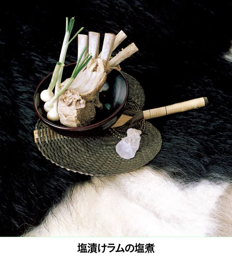
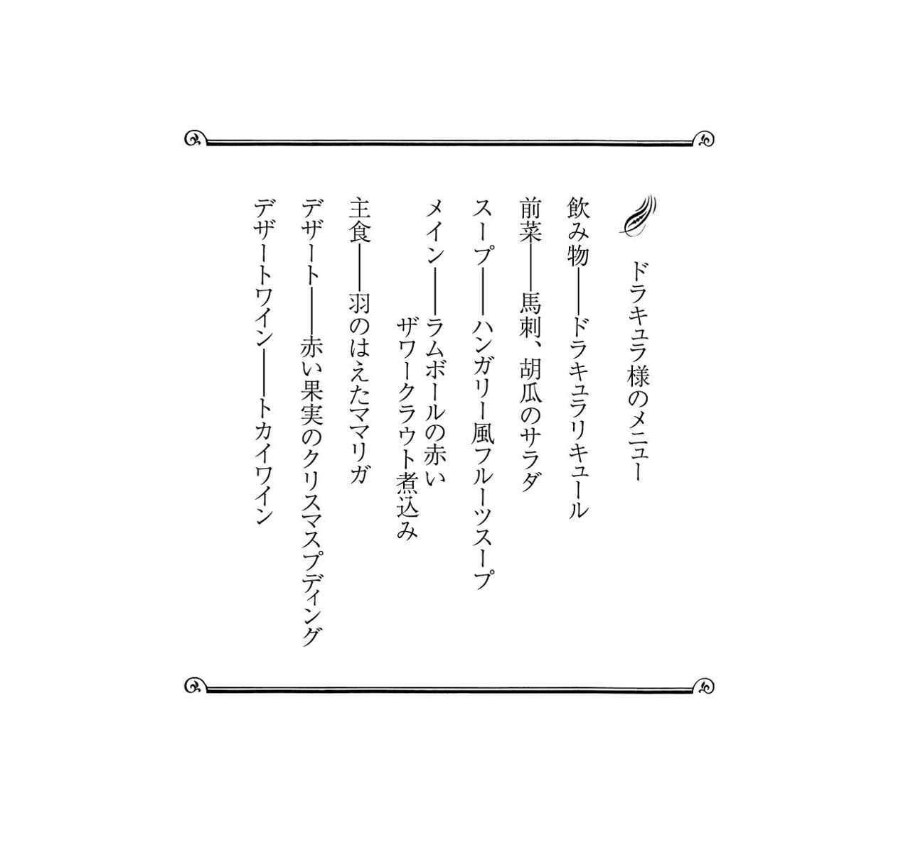

| 迷宮レストラン 第２巻 | |
| 河合 真理 | |
| (2006) | |
ＮＨＫ出版
迷宮レストラン 第２巻
河合真理
このレストランのコンセプトは、事前にお迎えする方の情報を収集した上で、毎回、ただ一人のお客様のために、お好みに合わせた料理をご用意することです。
食材については、それぞれの時代、土地に存在していると思われるものの中から選び、調理道具に関しても可能なかぎり実在していたものに近づけて使用することを前提にして、すべてのレシピを作っています。
なかには個々の時代や土地に実在するレシピをそのままに再現しているものもありますが、ほとんどの料理は、資料から得られた情報を参考に、シェフが考案創造したレシピですので、その点はご了承ください。
あるとき私は、子供のころから憧れていた人物、スペインの建築家ガウディの伝記を読んでいて、彼が何を食べていたのだろうと気になりはじめました。そして、資料を集めて調べているうちに、あっという間に夢中になってしまいました。
誰にとっても、食べるということはごく日常的に行われている行為です。それゆえ、食事に対する考え方は、その人の生まれ育った環境や、人生観が無意識に映し出されていくものだと思うのです。
例えば、ナポレオン１世。眠る時間さえ惜しんだ彼にとって、食事もまた出来れば省略してしまいたい通過儀礼の一つに過ぎなかったのではないでしょうか。また、レオナルド・ダ・ヴィンチは自身の思想や美学に従って、健康的でバランスのとれた理想的な食生活を実現していました。先にあげたアントニ・ガウディにとっては、退廃に誘うすべての欲望を回避し、ストイックに自己実現をしていくための要素の一つとして食があったのかもしれません。ダーウィンにとっては学びの場として好奇心を満たしてくれるものであり、ファーブルにとっては、洗練された楽しみの場であったように思います。
資料を読みあさるにつれて、私の中で彼らの姿が現実味を帯びていくようになり、それに伴い、「この素材をこう料理したら、この人は喜んでくれるかもしれない」「こんな料理を食べてくれたら、もう少し体調がよくなったかもしれない」などと考えるようになっていました。資料にある未知の食材や調理法にふれてみたいという気持ちも手伝って、具体的なレシピが次々と頭に浮かぶようになってきたのです。
そんなことから、今回、この迷宮レストランを開店する運びとなりました。
さて、ただいまから、迷宮レストランがオープンいたします。お料理とともに、時空の旅をごゆっくりお楽しみください。
迷宮レストラン・オーナーシェフ 河合 真理
 まえがきに代えて
まえがきに代えてデザイン 中嶋香織
イラスト 古屋亜見子
撮影 長嶺輝明
スタイリスト 西村千寿
校正 井口泰子
この本のレシピで使用している計量カップはカップ１＝２００㎖、計量スプーンは大さじ１＝15㎖、小さじ１＝５㎖です。
イタリア・ルネッサンスの食卓
ルネッサンス期のヨーロッパの食事は、りんごやさくらんぼ、桃、梨などのフレッシュな果物で始めるのが一般的で、14世紀にはイタリア北部にオレンジの果樹園などもありました。また、イタリアでは前菜に生野菜が使われることも多く、宮廷でも野菜好みが広がり、多種多様なサラダやミネストラが生まれています。
多方面に才能を発揮したレオナルド・ダ・ヴィンチは食に対しても強い信念を持っており、菜食主義を通していました。同時代にはプラティナというペンネームで、礼儀作法や教育、健康についての著書を残した名門出身の知識人バルトロメオ・ダ・サキという人がおり、レオナルドも彼の書いた『品良き楽しみと健康について』などを愛読していました。プラティナによる著書の中にはレシピも数多く登場しています。プラティナのレシピは大変洗練されたもので、私自身にもかなりの影響力を及ぼしました。
今回のメニューは、レオナルドの好みに沿うよう、プラティナのレシピと趣向を参考に組み立てました。スープストック等に干し野菜を使用しましたが、これはルネッサンス時代の料理法ではなく日本での乾物を使っただしの応用です。どの料理も、レオナルドへの尊敬と憧れの気持ちを込めて作りました。
最後にレオナルドの手記の一節をご紹介します。
「食べたくないのに食べるな。食事は軽く、よく噛め。食べ物はよく煮る。腹を立てるな。澄んだ空気を吸え。ワインは適度に少しずつ何回にもわけて飲め。食事は定期的に摂れ。空腹を抱えているな」（杉浦明平訳）
｜シェフによるメニュー説明｜
飲み物──赤ワイン
本日はレオナルドの出身地、トスカーナ地方の豊かでコクのある赤ワインを用意しました。
前菜──さくらんぼとオレンジのサラダ
種を抜いたさくらんぼと、皮をむいたオレンジに、オレンジ果汁、レモン果汁、刻んだスペアミントを合わせたドレッシングをたっぷりかけ、ルッコラの花とタイムの花を添えました。葉と同じ香りがありますので、サラダと合わせてお召し上がりください。
さくらんぼとオレンジのサラダ
材料（４人分）
さくらんぼ20粒、オレンジ１ 個、レモン汁大さじ３、ミントの葉（好みの種類）10枚、ルッコラ、タイム等の花適宜
個、レモン汁大さじ３、ミントの葉（好みの種類）10枚、ルッコラ、タイム等の花適宜
作り方
１ さくらんぼは２つに割り、種を除く。オレンジ１個分は皮をむいて薄切りにする。
２ 残りのオレンジは汁を絞り、レモン汁、ミントの葉のみじん切りと合わせる。
３ １を並べ２を回しかける（５分以上おくと味がなじむ）。
４ ハーブの花を上に散らす。
スープ──ベジタリアンミネストラ ズッキーニの花のフリット添え
レオナルドの手記に「ミネストラが冷めるので......」と中断されているページがありましたので、本日はできるだけたくさんの野菜を使い、具だくさんのミネストラを用意しました。
だしは干したマッシュルームをメインにとり、具には干しそら豆とそばの実を加え、風味を増しました。ズッキーニの花をフワッと揚げたフリットを添えて。多方面にわたって活躍しているで、栄養のあるものをとって少しでもお疲れがとれましたらと思います。
ベジタリアンミネストラ
材料
野菜のストック......マッシュルーム６個、ブラウンマッシュルーム４個、たまねぎ１個、にんじん本、キャベツの外葉２枚、セロリ１本、ポロねぎ上部本ミネストラの具材（当時、イタリアにはまだトマトがなかったので入れない）......そら豆30粒、そばの実カップ、マッシュルーム３個、にんにく１かけ、たまねぎ個、なす１本、かぼちゃ80ｇ、ズッキーニ本、かぶ１個、にんじん本、セロリ１本、セルバチコまたはルッコラ５枚、オリーブ油大さじ１、塩・胡椒各少々
作り方
野菜のストックを作る
１ マッシュルーム２種は干しやすいようにスライスしてから、カラカラになるまで天日干しにする。
２ たまねぎは皮をむき、ほかのすべての材料とともに鍋に入れ、水約１・５～２ℓを注いで火にかけ、一煮立ちしたらアクを取り、弱火にして水加減しながら１時間火にかける。
３ ２に塩少々を入れて、布などで漉す。
ミネストラを作る
１ そら豆は下ゆでして皮をむき、ざるなどに上げてカラカラになるまで干す。
２ そばの実は固めに下ゆでしておく。
３ マッシュルームは４等分くらいに切る。なすとかぼちゃ、ズッキーニはところどころ皮をむく。かぶ、にんじんは皮をむき、セロリは筋を除く。以上すべて２cm弱の角切りにする。
４ にんにくはつぶし、たまねぎは粗みじんに切る。鍋にサラダ油少々をひき、にんにくとたまねぎを炒める。
５ ４になすとかぶを入れて炒め、塩、胡椒して取り出す。
６ 同じ鍋にその他の野菜を入れて炒め、塩、胡椒をふり、１と２、「野菜のストック」を加え、そら豆、にんじんが柔らかくなるまで煮る。
７ ５のなすとかぶを戻してセルバチコのザク切りを加え、なすとかぶに火が通るまで煮て、味をみて塩、胡椒をふる。
８ 花ズッキーニのフリットを添える。
メイン──花豆と干しいちじくのソテー
愛読していたといわれる、15世紀のイタリアで多くの食の本を書いた趣味人プラティナのレシピを参考に、いんげん豆を大きな花豆にかえて作りました。赤ワインとの相性を考え、にんにくや香り高いハーブをしっかりきかせました。
花豆と干しいちじくのソテー
材料（４人分）
花豆（一晩水につけたもの）カップ１、天日干しいちじく（粗く刻んだもの）カップ１、にんにく（みじん切り）（大）１かけ分、たまねぎ（みじん切り）個分、リーキ（みじん切り）本分、セージ・ローズマリー・タイム・バジル（各刻んだもの）合わせて大さじ３強、オリーブ油・塩・胡椒各適量
作り方
１ 花豆は水を替えて柔らかくなるまでゆっくり煮て、水けをきる。
２ 鍋にオリーブ油大さじ３を熱し、みじん切りのにんにくとたまねぎを入れてよく炒め、リーキを加えてさらに炒め、いちじくを加えてサッと炒めたら、１の花豆を加えて炒め、塩・胡椒各適宜をふって刻んだハーブを加えて香りが出るまで炒める。味をみて塩、胡椒を多めにふる。
パン──セモリナ粉とオリーブのパン
本日は、果物や野菜の甘みのある品が多いので、本来はパスタに使用する粉を用い、さっぱりとしたパンを焼きました。
デザート──レオナルドのためのアップルパイ
サフラン、クローブ、シナモン、ナツメグを加えた白ワインで、りんごと干し杏子、葡萄を煮て、ここに、よく炒った松の実と胡桃を加えたものを、アーモンド粉を加えてつくったパイ生地で包みました。市場で食用に売っていた鳥を逃がすために買ったというエピソードに基づき、かごのイメージから形を作りました。
レオナルドのためのアップルパイ
材料
りんご３個、ドライデーツ３個、レーズン大さじ４、ドライアプリコット６枚、レモン汁大さじ３、白ワインカップ１、白葡萄ジュースカップ１、サフラン３本、シナモンスティック１本、クローブ２本、胡桃６かけ、松の実大さじ３
生地......強力粉１７５ｇ、薄力粉25ｇ、アーモンドプードル50ｇ、バター１８０ｇ、塩５ｇ、溶かしバター25ｇ
作り方
１ サフランは水大さじ２で戻す。
２ りんごは皮をむき、芯を取り（芯はとっておく）、厚めにスライスしてレモン汁をかける。
３ ２のりんご、ドライフルーツ、ワイン、ジュース、スパイス、１のサフランを汁ごと鍋に入れ、サッと煮たらアクを取り、落としぶたをして水分がなくなるまで弱火で煮る。
４ 胡桃、松の実は炒る。
５ 生地の粉類を混ぜ、塩と水カップを加え、溶かしバターを合わせてよく混ぜ、丸くまとめ、切れ目を入れて１時間冷やす。
６ 冷やしたバターを布に挟み、上からめん棒などでたたいて１cmくらいの厚さの正方形にする。
７ ５の生地を取り出して伸ばし、６を中心に置いて四方から包み、めん棒で押し伸ばして三つ折りにし、再び冷やす。
８ ７の折口を手前にしてめん棒で押して伸ばして三つ折りにし、１時間冷やす。これを合計６回繰り返す。
９ 生地をタルト型に合わせてのせ、３と４をまんべんなくのせ、残りの生地で平らなひも状のものを作り、かご状に編んで上に乗せる。
10 ２００℃のオーブンで、約50分間焼く。
頼朝の考案した鎌倉武士の食
義経の兄頼朝は、鎌倉幕府を開くにあたり、京の公家のような贅沢な暮らしを戒め、質実剛健の旨を徹底させました。武士軍団であったはずの平氏が滅んだのは退廃的な生活によるものだというわけです。平家滅亡を描いた『平家物語』に、食事時に木曽義仲を訪ねた猫間中納言が、あまりの粗末な食事に箸を出せなかったという一節があります。一般的な鎌倉武士の食事は朝、夕の２食。山盛りの飯に一汁一菜、副菜として塩や梅干し、味噌等を添えた質素なもので、１日に５合の玄米飯を食べていました。鎌倉周辺の墳墓から出土する武士の骨は、現代人よりも太くてがっしりしていたといいます。
ところで、今回のお客様は義経なのですが、義経・弁慶の一行は全国各地に食べ物の伝説を残しています。後ほど紹介する「鳴子の納豆」、会津若松の「五郎兵衛飴」のほかにも、屋島に近い白鳥の「ぶどうもち」や岩手県江刺の「白粟粥」など数えればきりがありません。平氏を追って西国に戦い、兄に追われて北国に逃れた義経の生涯は常に旅の途上で、判官びいきと相まって様々な言い伝えが残されたのでしょう。
そこで、今回の献立は奥州平泉にほど近い三陸のほやと牡蠣、鳴子の納豆、新潟県三の宮の鯉、会津の米飴、吉野の葛などを取り寄せて調理しました。また、戦国時代には刀などで削って食した「削り物（貝や魚などを固く干したもの）」という保存食があります。資料には鰹、鮑、牡蠣とあり、ほやは使われてはいなかったようですが、今回は鮮度のよい三陸のほやも加えることにしました。海水程度の塩水に牡蠣を、そしてほやの汁に塩少々を加えたところにほやを漬け、各々竹串に刺して固くなるまで風干ししてみました。
なかでも、ほやを干したものには独特の甘味があり、噛みしめると濃縮したうまみが広がる、上等な珍味となりました。青森出身の私の祖母はほやを焼いて食べていました。干しほやは祖母が焼いたほやに似て、生とはまた違う味わいなので、ほやが苦手な方も一度お試しください。ただ、ほやの香りは残りますので、必ず好きになります等とは保証しかねます。
｜シェフによる献立説明｜
飲み物──にごり酒
武士にとって、酒は戦闘時の士気を高めるためにも必要なものでした。
先付──ほやと牡蠣の干し貝
干し貝は、代表的な食材の一つです。奥州平泉に縁が深い義経のために、三陸でとれたほやと牡蠣を塩水に漬け、竹串に刺して３日ほど風干ししました。一口食べれば、干し貝の香りとうまみが口いっぱいに広がり、御酒の味も格別になることと思います。
前菜──梅納豆
平安期には食されていたといわれる納豆ですが、宮城県鳴子町には、旅する義経が偶然に作ったという言い伝えが残っています。戦時食として重宝された梅干しと味噌で味を調え、あさつきを加えて和えました。
汁物──鯉こく
滝を登る鯉は出世魚として、武士には最も珍重された魚でした。苦肝を除いてブツ切りにし、ゆっくり煮込みました。味噌で味をつけ、粉山椒とみつばの香りを添えました。
鯉こく
材料（４人分）
鯉（切り身）４切れ、酒大さじ３、味噌大さじ２、みつば・粉山椒各適量
作り方
１ 鯉は、苦肝をつぶさないように注意して内臓を抜き、筒切りにしてよく洗う。
２ 鍋に水カップ７を入れて沸かし、鯉の切り身を入れて酒と半量の味噌を加え、１時間ほど弱火で煮る。
３ 味をみながら残りの味噌を加え、30分間ほど煮てたっぷりのみつばと粉山椒を添える。
ご飯物──玄米ご飯
鎌倉武士が飽食の平安人に勝ったのは玄米ご飯のお陰と伝えられています。土鍋でゆっくり炊き上げましたので、外側はコシがあり、中はもっちりしたご飯となりました。
香の物──粕漬け
無二の友、弁慶が粕汁を好んだという話（羽黒山には弁慶の粕鍋が残る）がありましたので、酒粕を使い、ひと塩した白瓜と杏子を漬けました。杏子の粕漬けは私たちにはなじみがありませんが、当時はかなり一般的なものだったようです。
甘味──銘菓「義経」
福島県会津若松には、平泉に逃れる義経が立ち寄って、借金してまで米飴（五郎兵衛飴）を食べたといわれる飴屋があります。京都出身の義経には、飴の甘みはさぞ懐かしく、元気をつけてくれたことでしょう。米飴と吉野葛を練り上げ、中に干した豆味噌を仕込み、桜の花の塩漬けを添えた菓子にしました。やさしい甘さと塩辛さが義経の人生のようにも思われましたので、僭越ながら名前をいただきました。
銘菓「義経」
（実在の菓子名ではありません）
材料（４個分）
葛粉60ｇ、米飴１５０ｇ、浜納豆または大徳寺納豆４個、桜の花の塩漬け４個、桜の葉の塩漬け４枚
作り方
１ くず粉に水約カップ１を加え、すり混ぜて漉す。
２ 桜の花と葉は水にサッとつけて取り出し、水けをふく。
３ 水カップ２と米飴を火にかけ、飴をゆるめてアクが出たら取る。
４ １に３を少しずつ加えながら弱火にかけ、常に木べらを鍋底にあてて混ぜる。ツヤと粘りが出てきたら、焦げ付かないように手早く練り上げ、ぽってりと落ちるくらいの固さにする。
５ 大きめの杯などを水にくぐらせ、桜の花の塩漬けを底の部分に置き、４を流し入れて中央部に浜納豆を１粒加え入れる。
６ ５を冷水の中で冷やし固めたら、器を返して取り出し、皿に桜の葉の塩漬けを敷き、その上にのせる。
シンプルなモンゴルの食
13世紀、ローマ教皇の親書を携えてモンゴル帝国の首都カラコルムに派遣された修道士カルピニは、旅行記の中で「モンゴル人は冬に肉を食べ、夏は馬乳を飲む」と書いています。
私は馬乳を飲んだことがなかったのですが、馬乳酒が手に入ったので、さっそく試してみました。見た目はシュワシュワと発泡している薄めのヨーグルト水のようで、さっぱりしていて飲みやすく、飽きのこない味。アルコール度数も低く、体によさそうな、朝食にもいいかなと思うほどくせのないものでした。また、モンゴルには馬乳酒だけでなく賓客用にラクダの乳で造った酒もあるのだそうです。
さて、チンギス・ハーンの生きた時代の食材を歴史書『元朝秘史』などから拾ってみると、三歳鹿、野羊、羊、えぞ山鳥、小魚、雑魚、野韮、山葱、紅百合の根、山梨、さくらんぼ、野生の苺、馬乳酒、酪（チーズなどの乳製品）などが出てきます。また塩漬けの羊肉を干して煮るといった具体的な料理法も書かれています。
モンゴルでは、客人をもてなす際に最初に乳茶をふるまいます。乳茶からコースをはじめ、特別なおもてなしには肉ばかりが出るそうです。そこで、今回は肉中心で構成しました。
｜シェフによるメニュー説明｜
飲み物──塩のミルクティー
おもてなしの際、食前に出される塩入りのミルクティーで、まずは体を温めていただこうと思います。モンゴル流に高粱（コーリャン）酒の原料であるタカキビを炒っていれました。大変香ばしいお茶です。
──乳酒
モンゴルでは馬乳酒が定番ですが、牛、羊、ラクダなどの乳も飲まれています。特にラクダ乳は牛乳よりもはるかに高カロリーで、呼吸器官を活性化し、肺病などにも薬効があるといわれ、消化吸収もよいそうです。
メイン──塩漬けラムの塩煮
モンゴルでは、羊はとても大切な財産ですから、幼肉であるラムを食べることはほとんどありません。ただ、母羊が若すぎたり、双子だったりして哺乳ができない子羊は「テレー」といって、食用にしてもよいといいます。『元朝秘史』の中にも、チンギス・ハーン様が１匹のテレーをもらうシーンが書かれています。本日は骨付きのテレーを岩塩で塩漬けし、一度ゆでこぼして臭みを抜いてから、野生のにんにくと高粱酒を加えて煮込み、薬味に野蒜を添えました。

ラムの塩煮
材料（４人分）
骨付ラム１kg、塩大さじ５（岩塩を細かく砕いたもの）、高梁酒カップ１、野蒜の茎20本、にんにく１かけ、野蒜または、青ねぎ等適宜
作り方
１ ラム肉は骨付きのまままんべんなく塩をまぶしつけて冷暗所に１晩置く。
２ 鍋に入れやすい大きさに１を切り、鍋に入れてひたひたに水を注ぎ、アクを取りながら強火にかけ、沸騰したら一度ゆでこぼす。
３ ２のラム肉をきれいに洗った鍋に戻し、にんにく、野蒜の茎、高梁酒を加えてひたひたに水を注ぎ、再び火にかける。
４ ３が煮立ったら弱火にしてアクを取りながら１時間以上煮る。味をみて塩加減する。
５ 薬味に野蒜などを添える。
──鹿の鉄板焼き
『元朝秘史』に、幼少時代のテムジンが狩猟や釣りをして、鹿肉などの食料を得ていたと書かれていましたので、鹿肉で一品用意しました。鹿肉は包丁でたたいてミンチにし、あさつき、山芋、にら、鶉の卵など野生で手に入るものを合わせ、元朝以前から伝わるモンゴル風のミートケーキにしました。本来は羊肉で作り、羊のレバーを入れるそうですが、手に入らないので鶏のレバーで代用しました。
鹿の鉄板焼き
材料（４人分）
鹿肉６００ｇ、鶏レバー１００ｇ、にら10本、あさつき10本、山芋30ｇ、しょうが１かけ、鶉卵10個、塩・胡椒・ごま油各適量
作り方
１ 鹿肉と鶏レバーは包丁でたたき、ミンチにする。
２ にら、あさつき、しょうがはみじんに刻み、山芋はたたいてつぶし、１と合わせて鶉卵を割り入れ、塩・胡椒各少々を加えてよく練り合わせ、形を整える。
３ ごま油大さじをひいたフライパンで両面をじっくりと焼く。
付け合わせ──山芋のパンケーキ
チンギス・ハーンの時代に山芋があったかは定かではありませんが、似たようなものはあったのではないでしょうか。すりおろした芋を塩で味付けし、ごまをふって焼きました。
汁物──汁めん
モンゴル料理店でよく見かける平打ちめんを小麦粉と塩、水で打ちました。テレー（ラム）の塩煮の汁にあさつきを添えてあります。
デザート──フルーツヨーグルト 白樺ソース
チンギス・ハーンの時代から、チーズやヨーグルトは作られていたようです。本日は山羊のヨーグルトを使い、ブルーベリーと、『元朝秘史』に出てくる木苺と山梨（日本では手に入らないので岩梨）を合わせました。ご幼少のみぎり、木の下で眠っていたチンギス・ハーンの口に木の樹液が滴り、そのおかげで大きくなったという伝説がありますので、白樺の樹液を煮詰めて甘味にしました。
ドラキュラの赤い食卓
泣く子も黙る吸血鬼ドラキュラには実在のモデルがいました。15世紀に現在のルーマニアの一部にあたるワラキアの領主で、敵国からドラキュラ（ドラゴンの子）と恐れられていたヴラド・ツェペシュ公がその人です。
彼は、11歳から６年間をオスマン・トルコの捕虜として過ごしました。その間、父と兄を次々に殺されてしまうという暗い少年時代を送り、若くしてワラキア公となります。当時、ヨーロッパ諸国を席巻して圧倒的な強さを誇っていたトルコ軍と戦い、トルコ兵を串刺しにして見せしめにしたことから、ツェペシュ（串刺し公の意）の異名がついたといわれています。ただ、ワラキア側から見れば、冷徹な戦略と巧みな処世術で強敵オスマン・トルコから果敢に自国を守った英雄でもありました。
さて、私たちが知っているドラキュラは、19世紀、アイルランド出身の作家ブラム・ストーカーの創作です。彼は残酷なツェペシュ公を題材に、アイルランドの吸血鬼伝説と結びつけ、吸血鬼ドラキュラの物語を誕生させたのでした。
今回の料理では、ツェペシュに関する食の資料は見つけられませんでしたので、羊を中心とした現在のルーマニアに残る伝統料理を参考にレシピを作りました。ワラキア周辺が香料用の薔薇の産地ということから、ドラキュラをイメージした赤い色のコースを組み立てました。
残忍なというよりは、孤独な独裁者にささげるメニューです。

｜シェフによるメニュー説明｜
飲み物──ドラキュラリキュール
ドラキュラの名をつけた赤い酒は、多種市販されていますが、本日はカシスとジンジャーベースのリキュールを用意しました。
前菜──馬刺、胡瓜のサラダ
馬にまたがり、戦争に明け暮れていたツェペシュ公を想い、馬の生肉をワラキアの大地に咲く赤い薔薇に見立てました。塩、胡椒で召し上がってください。ハンガリー風の酢でマリネした胡瓜のサラダ、赤いエシャロット、酢漬けのケイパーを添えて。
馬刺、胡瓜のサラダ
材料（４人分）
生食用馬肉赤身１５０ｇ、胡瓜１本、塩適宜、白ワインビネガー大さじ３、粗糖小さじ１、パプリカパウダー適宜、エシャロット１コ、ケイパー酢漬けまたは塩漬け適宜、塩・胡椒適宜
作り方
１ 胡瓜は縦に薄切りにしてバットなどに並べ、５～８％の塩水を回しかけ、しばらくおく。
２ １を程よい塩分になるよう水洗いして、水けを絞り、ビネガー、粗糖をよく混ぜたものを回しかけしばらくおく。
３ 馬肉は凍らせてから薄切りにし、扱いやすくなるまで溶かして薔薇の花と蕾のような形に整え、皿に盛る。
４ ３の皿に２の水けを軽く絞ったものを葉や茎に見立てて盛り付ける。
５ ４にみじん切りのエシャロット、ケイパーを添え、肉の部分に塩、胡椒、パプリカをふる。
６ 全体を混ぜてから供する。
スープ──ハンガリー風フルーツスープ
ハンガリーで好まれた果物のスープを、本日は赤いラズベリーで作りました。ラズベリーをきび砂糖、レモンの皮、クローブ、シナモンで煮て冷やしました。サワークリーム、生クリームを加えてお召し上がりください。
ハンガリー風フルーツスープ
材料（４人分）
ラズベリーカップ２、レモンの皮の削いだもの４かけ、蜂蜜大さじ１、きび砂糖大さじ１、シナモンスティック１本、クローブ２個、サワークリーム適宜
作り方
１ 鍋に水カップ２強に蜂蜜、きび砂糖、２つに割ったシナモン、クローブを入れ煮立てそのまま冷まし、シナモン、クローブを取り出す。
２ １にレモンの皮とラズベリーを加えて火にかけ、好みの状態まで加熱する。
３ ２を冷やして器に入れ、サワークリームを適宜加えてよく混ぜる。
メイン──ラムボールの赤いザワークラウト煮込み
ルーマニアでよく食べられているラムの肉をたたいてミンチにし、マッシュルーム、米、たまねぎを加えてミートボールにし、赤キャベツのザワークラウトと白ワインを加えて煮込み、最後に羊のチーズを加えました。
赤いザワークラウト
材料（作りやすい分量）
紫キャベツ個、りんご酢カップ、ロゼワインカップ、蜂蜜大さじ１、塩小さじ 、黒粒胡椒１つまみ、ローリエ１枚、キャラウェイシード少々
、黒粒胡椒１つまみ、ローリエ１枚、キャラウェイシード少々
※特ににんにくが苦手でない方は１ににんにく１かけを加えると、よりおいしくなる。
作り方
１ 紫キャベツ以外の材料を鍋に入れてひと煮立ちさせ、冷ます。
２ 紫キャベツはせん切りにする。
３ ２をざるに入れ、塩（分量外）を加えて煮立てた湯に５秒間ほど入れ、氷を入れた冷水に取りよく絞る。
４ ３に１を回しかけなじませる。
ラムボールの赤いザワークラウト煮込み
材料（４人分）
ラム肉３５０ｇ、たまねぎ個、ブラウンマッシュルーム４個、ゆでた米60ｇ（固めに下ゆでする）、セージ１本、クローブパウダー少々、シナモンパウダー少々、ローリエ１枚、バター大さじ２、赤いザワークラウトカップ１、羊のチーズ（ハードタイプ）50～80ｇ、塩・胡椒各適量
作り方
１ ラム肉はたたくようにして細かく刻み、ミンチにする。
２ たまねぎ、マッシュルーム、セージはそれぞれみじん切りにする。
３ １に２と米、スパイスを加え、塩、胡椒をして練る。
４ 鍋にバターを溶かし、３を丸めて入れて表面を焼き、ローリエを加え、ひたひたに水を注いで肉に火が通るまで煮る。
５ ４にザワークラウトを加えて、さらに10分間以上煮る。
６ 火にかけたまま仕上げに、塩、胡椒して削った羊のチーズを加え、チーズが全体に溶けるまで煮る。
主食──羽のはえたママリガ
ツェペシュ公の時代のルーマニアには、まだとうもろこしはありませんでしたが、４００年後に物語の主人公として復活しておられるので、現在のルーマニアの主食ママリガ（とうもろこしの粉を水と塩、牛乳で練り上げたもの）を用意しました。ドラキュラの語源となったツェペシュ公の父上の呼び名ドラゴンにちなみ、じゃがいもを揚げて龍の羽を模し、トルコ胡椒ともいわれるパプリカパウダーの赤を添えて。
デザート──赤い果実のクリスマスプディング
祖国ルーマニアでは英雄として親しまれているツェペシュ公を、吸血鬼に仕立てた小説家のストーカーに敬意を表し、イギリス風のクリスマスプディングを、赤い果実で作りました。ストーカーの生まれ故郷アイルランドのアイリッシュウイスキーを加えた生クリームと、ざくろのソースを添えています。
赤い果実のクリスマスプディング
材料（７００㎖のクグロフ型１個分）
生地......ドライフルーツ（チェリー60ｇ、クランベリー１００ｇ、ラズベリー50ｇ）、オレンジピール50ｇ、アーモンド60ｇ、生パン粉１００ｇ、きび砂糖１００ｇ、バター（食塩不使用）１００ｇ、薄力粉１００ｇ、ビール１５０㎖、レモン汁個分、レモン（国産）の皮（すりおろす）適量、ブランデー大さじ３、卵２個（軽く泡立てる）、スパイス（ナツメグ・シナモン・クローブ各少々）
ソース......ざくろ果汁50㎖、コーンスターチ小さじ、生クリーム１００㎖、アイリッシュウイスキー大さじ１
作り方
１日目
１ ドライフルーツはぬるま湯で洗い、水けをきる。アーモンドは薄皮を取って刻む。薄力粉はふるう。
２ 生地の材料をすべて混ぜ合わせ、ふたをして１晩おく。
２日目
３ 型にバター（分量外）をぬり、一晩ねかせた生地の材料を詰め（中央をくぼませる）、三重にしたオーブン用の紙でふたをし、ひもで縛る。
４ 大きい鍋に３を入れ、沸騰した湯を型の高さの七分目まで注ぎ、ふたをして中火で５時間蒸す。
５ ざくろ果汁を温めてコーンスターチでとろみをつけたものを、泡立てた生クリームにアイリッシュウイスキーを加えたものとともに添える。
デザートワイン──トカイワイン
ハンガリー生まれのトカイワインは、極甘の貴腐葡萄を使った世界三大ワインの一つです。ドラキュラの物語の中にもこのワインが登場していました。
戦国武将の妻。「内助の功」の見本とされる。１５５７～１６１７（弘治３～元和３）年。浅井氏の家臣、若宮喜助友興の娘として、現在の滋賀県近江町で生まれた（一説には遠藤盛数の娘として郡上八幡に生まれたとある）。夫・一豊の立身出世を助けたとされる。市で名馬を見つけた一豊が、金10両という価格のためあきらめかけたが、千代が嫁入り時に持ってきた金子を差し出し、買うことができた。織田信長の馬ぞろえの際、一豊はこの名馬のお陰で、信長の歓心を得て、出世のきっかけとした。一豊は信長、秀吉、家康に次々と仕える。千代は一豊とともに、近江長浜唐国、掛川、土佐へと移り、夫の死後は京で暮らし、61歳で没す。
戦国武将の食
尾張の田舎武士であった一豊は織田信長に仕え、信長なき後は豊臣秀吉、さらには徳川家康に仕えて土佐一国の大名になりました。同郷の先輩前田利家や同輩の浅野長政、後輩の加藤清正や福島正則らに比べれば決して早い出世とはいえませんが、格別の武功も縁故もなく、ひたすら誠実さとまじめさを取り柄に、ついには二十万石の大大名になったわけですからさすがといわざるをえません。コネも学歴もない平凡なサラリーマンが、地道に勤め上げて定年間際についに役員になってしまったような共感を覚えます。
さて、その妻千代ですが、講談や落語の「山内一豊の妻」は、千代を「内助」の妻として語り、司馬遼太郎さんは『功名が辻』でさらに一歩踏み込み、夫を上手に操縦する賢夫人として描いています。時代をさかのぼって、享保の儒学者であった新井白石までも「賢しい人」と評しています。また、現存する千代の書状はたおやかで美しく、その筆跡は教養の深さを感じさせます。講談調の美談や英雄談にはマユツバが多いものですが、千代の場合、馬代・金十両や裁縫上手で唐織の小袖を献上したという逸話も実際の出来事のように思えます。
ところで、その千代の料理の腕前については資料がありません。ただ、土佐山内家を奉る高知の藤並神社には、千代が使っていた枡がご神体として奉納されています（実物は太平洋戦争の空襲で焼けてしまい現在は複製品）。一豊が若く貧しかった時代に俎板が買えず、千代はこの枡を裏返して俎板代わりに使っていたという逸話から、ご神体として納められたのだそうです。この一事からだけでも、千代が武将の妻としてしっかり家庭を守っていたのだろうことが想像できます。
さて、その献立ですが、戦国時代の戦陣食や長浜時代に食べたであろう鮒寿司、ポルトガル伝来の砂糖を使った鶏卵菓子などを組み合わせました。また、実際に秀吉や家康が食した献立が残っていましたので参考にし、当時としては豪勢ともいえる献立にしました。
｜シェフによる献立説明｜
前菜──鮒寿司、干し納豆
千代にとって近江国長浜は思い出深い土地でしょう。山内一豊が初めて城持ちになったのが、この地です。長浜名物といえば鮒寿司。歴史のある老舗より取り寄せました。また、納豆を水で洗い、小麦粉と塩をふって干した、干し納豆も用意しました。これは、戦地への携帯食に使われていた大切な栄養源でした。
椀物──ごま豆腐の吸い物
中国から普茶料理が伝わったのがこの時代。精進料理の中でも濃厚で栄養のあるごま豆腐を小さな杯で固め、干ししいたけと昆布でとっただしに、おろし山葵を添えました。
刺身代わり──鮑の煮鱠
現代のような輸送手段がなかったので、魚介類は刺身よりも鱠にすることが多かったようです。鮑を３時間以上かけて酒蒸しにし、ごぼうやにんじん、大根とともにごま油で炒り煮の鱠にしました。香りのよいせりを添えました。
鮑の煮鱠
材料（４人分）
鮑（中くらいのもの）１個、にんじん（小）本（６cm）、大根（小） 本（10cm）、ごぼう本（15cm）、せりの葉２本分、だし大さじ４、塩、酒、ごま油、しょうゆ、酢
本（10cm）、ごぼう本（15cm）、せりの葉２本分、だし大さじ４、塩、酒、ごま油、しょうゆ、酢
１ 鮑は表裏を塩でこすってよく洗い、酒大さじ１をふって柔らかくなるまで、３時間以上蒸す（風味は落ちるが、大根おろし〈分量外〉をのせて蒸すと30分間くらいで柔らかくなる）。冷めたら細切りにする。蒸し汁はとっておく。
２ にんじんは皮をむいてせん切り、大根も同様にして、それぞれ、塩を二つまみくらいふってしばらくおき、しんなりしてきたら、水でサッと洗い、水けを絞る。
３ ごぼうは皮をたわしなどでよく洗い、厚めのささがきにして水にさらす。
４ ２と３をごま油大さじ２で炒め、１の鮑、蒸し汁、だし、しょうゆ小さじ２、酒大さじ１を加え、サッと煮、酢大さじ２を加え、再びサッと煮て火を止める。
５ せん切りにして水にさらしたせりの葉の水けをよくきり、４が熱いうちに加えてサッとあえる。そのまま冷まして味をなじませる。
焼き物──鶉のにんにくじょうゆ焼き
信長様のお茶会の献立にもありました鶉の焼き物です。秀吉のスタミナ源であったにんにくじょうゆでつけ焼きにし、香ばしく炒った芥子の実をふりました。秀吉は、宿陣にしていた禅寺ですらにんにくを所望されました。当時はどの農家でも家庭薬用ににんにくを栽培していたそうです。胡桃をしょうゆとみりんで炒り煮したものと、昆布と梅干しの煮たものを付け合わせました。
ご飯物──焼きおにぎり茶漬け 鯛の天婦羅添え
当時は、ご飯を炊くのも大変で、日に一度炊くのが一般的。炊きたて以外は湯や水をかけて食べました。戦時の弁当といえば、日もちのいい焼きおにぎりが定番。家康が好んだ麦飯を使った焼きおにぎりを茶漬けにしました。家康の死因となったことで有名な鯛の天婦羅もごいっしょに。
椀物代わり──芋がらの八丁味噌煮
戦国時代、味噌は大切な栄養源。千代の故郷美濃でも八丁味噌が使われています。この味噌は、一説には信長様の明せきな頭脳の源だったとか。また、このころの携帯食に、芋がら（ずいき）を八丁味噌で煮てから干し、湯を注ぐと即席の味噌汁となる優れた食品がありました。本日は、生の芋がらを濃いめの八丁味噌でサッと煮て椀にしました。
芋がらの八丁味噌煮
材料（１人分）
ずいき（芋がら。60cmくらいのもの）１本、はす芋（60cmくらいのもの）１個、だしカップ１、八丁味噌大さじ２、塩適宜
１ ずいきとはす芋は、端からすっと皮をむいて鍋に合わせて切り、熱湯でゆでてから塩水につけておく。
２ 味噌に少しずつだしを加えてよく溶き、一度ざるなどで漉す。
３ １を食べやすい長さに切り、２とともに鍋に入れて煮て、そのまま冷ます。
茶菓子──鶏卵菓子と抹茶
ポルトガル伝来の食品の中でも金平糖、有平糖、カルメ焼きなどの砂糖菓子は、皆の憧れの的。お茶菓子は氷砂糖を少量の水でゆっくりと溶かし、水飴状になったところへ、少しずつ卵黄を入れて引き上げ、丸く固めて鶏卵菓子を作りました。当時の武士にとって茶を嗜むことは出世の証し。抹茶も用意いたしました。
飲み物──濁り酒
戦国時代の女性は奔放で気性も激しく、お酒にも強かったそうです。ご飯を酒に浸して干し、飲むときに水で戻すという戦時用の即席濁り酒などもあったのだとか。このころの人たちの創意工夫には頭が下がります。
『大百科事典』（平凡社）、『西洋人名辞典 増補版』（岩波書店）、『日本国語大辞典』（小学館）（掲載人物順）◎レオナルド・ダ・ヴィンチ『美食の文化史』ジョン・フランソワ・ルヴェル（筑摩書房）、『ベジタリアンの世界』鶴田静（人文書院）、『レオナルド・ダ・ヴィンチ』セリシュ・ブランリ（平凡社）、『世界の食文化史15 イタリア』北上俊一（農山村文化協会）、『旅人たちの食卓』フィリップ・ジレ（平凡社）、『レオナルド・ダ・ヴィンチの手記（上・下）』（岩波文庫）、『中世貴族の華麗な食卓』マドレーヌ・Ｐ・ブズマン（原書房）◎源義経『食からみた日本史』高木和夫（芽ばえ社）、『日本食生活史』渡辺実（吉川弘文館）、『たべもの日本史』永山久夫（河出書房新社）、『義経残照』（読売新聞社）、『たべもの今昔』江馬務（東京書房）◎チンギス・ハーン『チンギス・ハーンの伝説』蓮見治雄（角川書店）、『モンゴル帝国の戦い』ロバート・マーシャル（東洋書林）、『モンゴルの白いご馳走』石毛直道（チクマ秀版社）、『モンゴルの神話・伝説』原山煌（東方書店）、『元朝秘史』小沢重男訳（岩波文庫）、『モンゴル万華鏡』小長谷有紀（角川選書）◎ドラキュラ『ドラキュラ誕生』仁賀克雄（講談社）、『ドラキュラ１００年の幻想』平松洋、『ルーマニア人・酒・歌』みやこうせい（ともに東京書籍）、『ドラキュラ伯爵のこと』ニコラス・ストイチェスク（恒文社）、『スラブ吸血鬼伝説考』栗原成郎（河出書房新社）、『ドラキュラ伝説』レイモンド・Ｔ・マクナリーほか（角川書店）、『週刊朝日百科 世界の食べもの第４巻』（朝日新聞社）◎山内一豊の妻千代『司馬太郎全集９ 功名が辻』（文藝春秋）、『旦那さま大事──山内一豊の妻』橋田寿賀子（ラインブックス）、『食からみた日本史 上下』高木和男（芽ばえ社）、『日本食物史』樋口清之（柴田書店）、『たべもの日本史』多田鉄之助、『たべもの戦国史』永山久夫（ともに新人物往来社）、『腹ごしらえの哲学』永山久夫（農文協）、『権力者の食卓──味覚の人間学』小田普（ＰＨＰ研究所）
河合真理（かわい・まり）
１９５９年生まれ。料理研究家の草分けであった祖母阿部なをから受け継いだ伝統料理をふまえ、身体に優しいナチュラル・フードを提案している。料理への豊かな発想力と探究心には定評があり、テレビ、雑誌等でレシピを発表。外食産業のメニューコンサルタントも手掛けている。趣味は寝る前の読書。好きな作家はヘンリー・ジェイムス。主な著書に『毎日ＳＯＵＰ』（文化出版局）、『おいしいひんやりさっぱりメニュー』（成美堂出版）、『とっておきの作りおき』（ニューズ出版）など。

迷宮レストラン 第２巻
２０１３（平成25）年４月30日 電子書籍版発行
著 者 河合真理
©2006 Mari Kawai
発行者 溝口明秀
発行所 ＮＨＫ出版
〒１５０｜８０８１ 東京都渋谷区宇田川町41｜１
電話 ０３｜３７８０｜３３１１（編集）
電話 ０５７０｜０００｜３２１（販売）
ホームページ http://www.nhk-book.co.jp
この作品は『迷宮レストラン クレオパトラから樋口一葉まで』〔２００６（平成18）年５月15日 第１刷発行〕に基づき、分冊および再構成して制作されました。
本作品の内容を無断で複製・複写・放送・データ放送配信・転載・改ざん・公衆送信（ホームページなどに掲載することを含む）することは、固くお断りいたします。